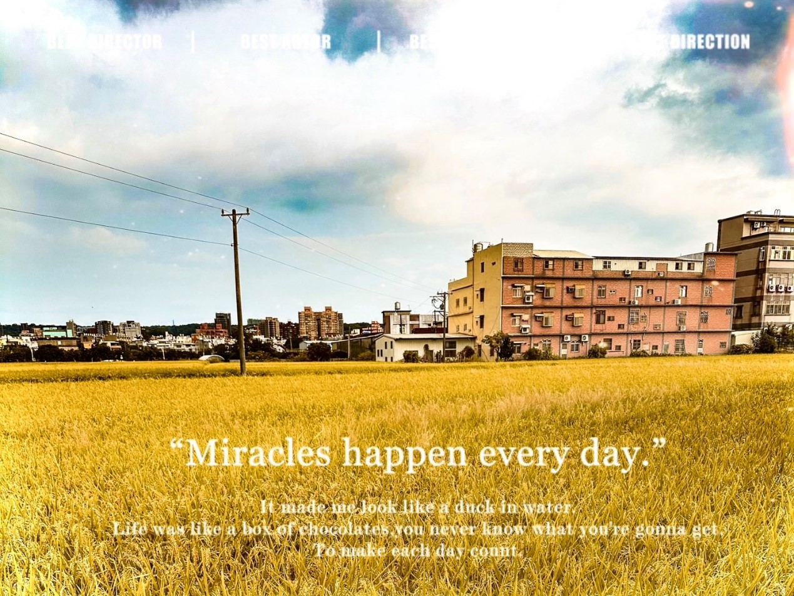
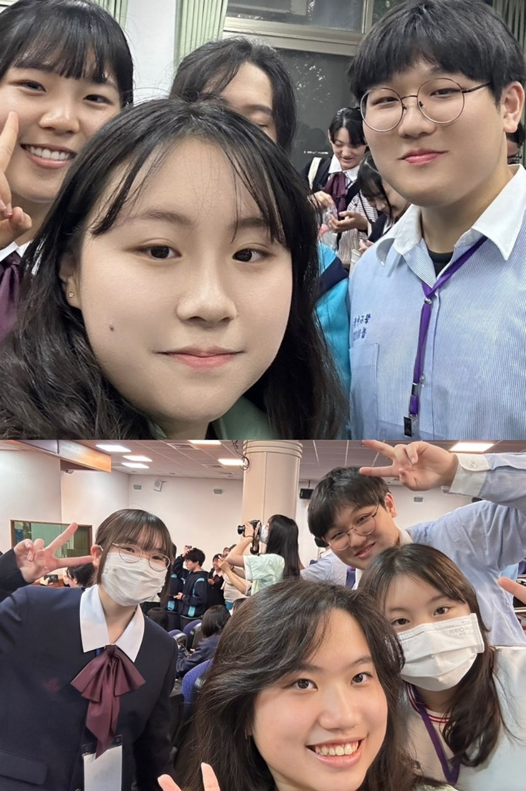
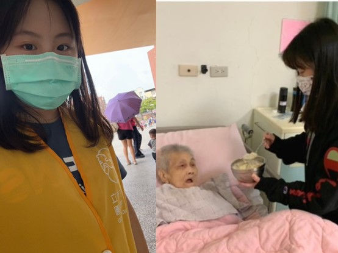
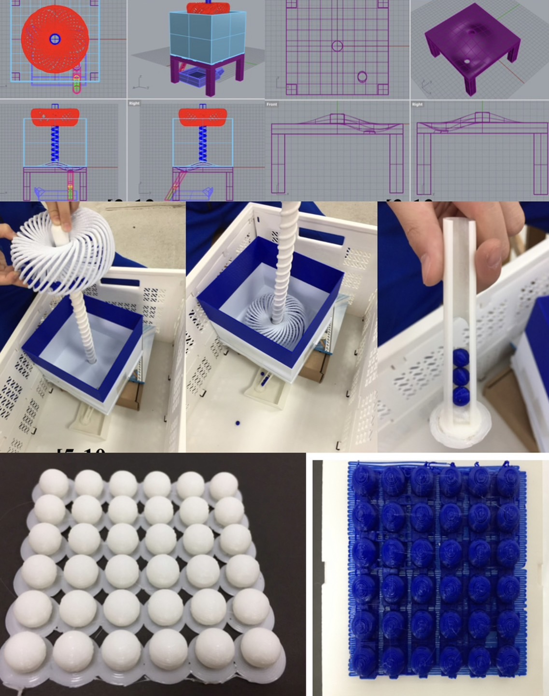
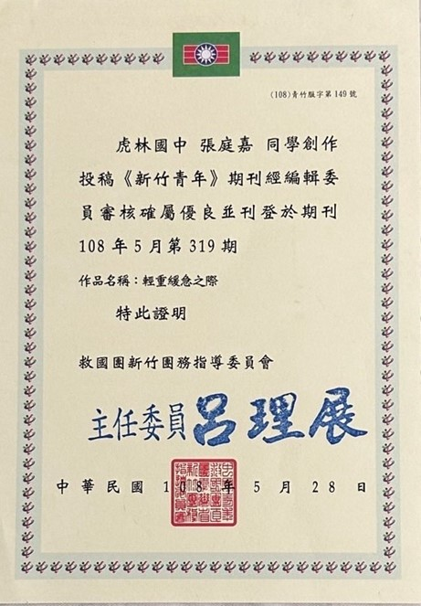
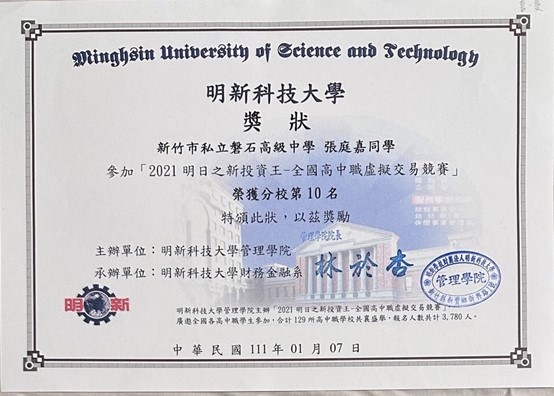

社團經歷

我在高三時對攝影藝術特別有興趣，我嚮往將眼前的美景永久保存起來，因此在高三時我參加了攝影社，
這張照片就是我拍的，參加攝影社的經驗讓我體會到攝影的魅力，同時也訓練了我的創意思維和技術能力。
攝影社活動中，我學會了觀察和捕捉美麗的事物，並透過攝影呈現出來。這需要細心、耐心和敏銳的觀察力，
同時也需要利用一些技術和創意的發揮。例如在後期製作中運用數位技術進行照片處理、設計排版作品以及在IG平台上展示作品等。
因此，參加攝影社的經驗不僅豐富了我的攝影技能，也培養了我的觀察力、創意和技術能力。
代表學校接待外國姊妹校

此次的接待國外姊妹校對我來說是一項具有挑戰的活動，
它讓我意識到英文的重要性也加深了我對不同文化之間的理解與尊重，擴展了我的視野，
讓我更加開放地面對不同文化的差異。這樣的體驗提升我開放的思維和跨文化交流的能力，
也讓我更了解到這些能力的重要性。因此，這次的經驗不僅豐富了我的學習體驗，
也讓我更有自主學習英文的動力。
志工服務

我曾經參與新竹市動物園和長照中心的志願服務。
這些服務鍛煉我的溝通能力和人際交往技巧，同時培養了我的觀察力和細心程度。
在動物園的志願服務中，我學會如何與不同背景的遊客溝通和如何清晰且流暢的表達意見，
並組織完整性的句子，將路徑以及購票程序、規則簡單地傳達給大眾。
而在老人院的志願服務中，看到許多行動不便的老爺爺、奶奶，很需要人照顧
護工教導我們如何照顧他們，才會讓他們比較舒服
看到這些爺爺奶奶真正更想要的是家人的陪伴，我也試著跟他們互動聊天
透過這次志工服務，不但增長了我的社會責任感和同理心，也讓我體會到了溝通和人際交往的重要性。
國中的興趣

我從國中起就對科技和資訊有濃厚的興趣，這次的競賽中需要向評審報告作品功能、理念和創作歷程，
這些不僅提升我的報告能力，同時也訓練我的臺風和自信心。除此之外，我們選擇使用3D列印來製作作品，
這讓我需要透過資訊科技提供的各種工具和平台，進行3D建模工作。這些工具有著豐富的渲染和展示功能，
可以讓我將想法和設計轉化為逼真的3D模型。透過這樣的技術，我學習如何運用資訊技術進行創意性的設計和表現。
區分輕重緩急

一次偶然的機會我參加了新竹青年的投稿，當時我常面臨到時間管理的問題，
導致很多事情都混亂失控，後來媽媽提醒我時間永遠夠也永遠不夠，
事情應該要區分輕重緩急，有先後順序，自然就能做好時間管理。
虛擬投資競賽的啟示

我參加了虛擬投資競賽，這項活動除了讓我深入了解金融市場，學習投資策略和風險管理，
也讓我對資訊更加好奇，我好奇背後的程式設計也好奇它的頁面操作是怎樣製作的。
經過網路平台模擬真實的投資環境，我學會如何分析市場趨勢、選擇投資標的，
以及管理投資組合。這些經驗培養了我的分析能力和決策能力。此外，
這項活動涉及到數據分析、信息處理和網路技術的應用，這些與資訊有關的技能和知識不禁令我想更加深入的探索。
{kind=link}